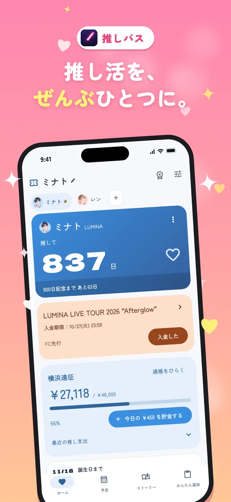
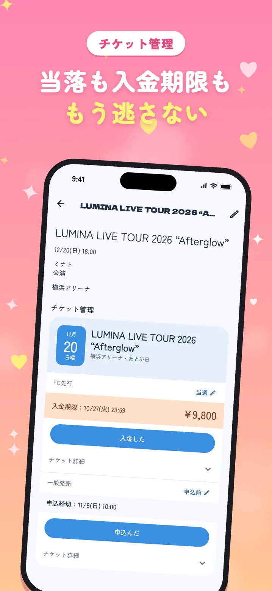
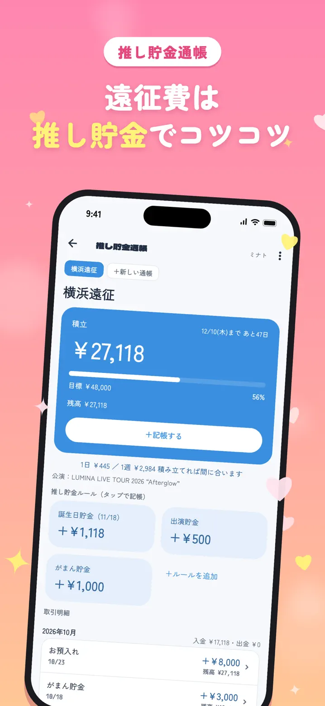
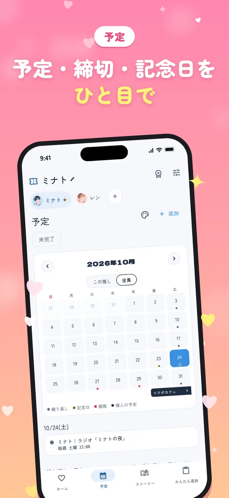

Oshipass
Organiser for fans, on iPhone and Android
Everything you do for your oshi, in one place.
How many days have you been a fan? When is the ticket payment due? How much more do you need for the trip? Oshipass keeps it all together, with no ads, and opens even at a venue with no signal.



Screens
Days together, tickets, the calendar and the savings book.

What it does
Days together
Counts the days since you became a fan, with countdowns to every 100 days and every year, birthdays, debut days and your first show.
Ticket ballots and payments
Follow every route to a show from applied to won, paid, issued and attended, with a reminder before each deadline that works even in airplane mode.
Paste to add
Paste a Japanese ticket-site email or announcement and the show, date, venue and deadlines are filled in. No AI: the rules run on your phone.
One calendar
Shows, ballots, pre-orders, deadlines, anniversaries and weekly programmes for all your oshis, plus memories saved with a mood.
Oshi savings book
Set a goal for a trip or merch and save like a bank book, with one-tap rules such as birthday saving: ¥318 for 18 March.
Goal cards and a passport
Every goal you reach becomes a collectible card, and badges and stamps collect in your passport as you keep records.
Before you download
- Price
- Free, with no ads. An optional membership, monthly or yearly with a 7-day free trial for eligible users, adds more than two oshis, photos in memories and premium looks.
- Works on
- iPhone and Android
- Languages
- Japanese, Traditional Chinese, English and Korean
- Your data
- Records and photos stay on your phone: no account, no server and no tracking. You can export everything, photos included.
- Good to know
- Oshipass never buys, resells or transfers tickets, and never signs in to ticket sites. It is not affiliated with any ticket service, artist or agency.
Next ballot coming up?
Add it to Oshipass and let the reminders keep track of the deadlines.
On a computer? Scan with your phone's camera.